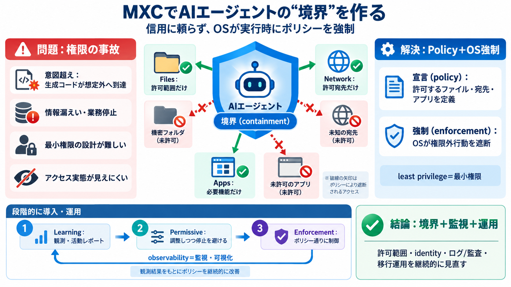

Windows platform security for AI agents - Windows Developer Blog
Sessions in Windows run with distinct user accounts, which enables isolation. Windows assigns a local ID or a cloud prov…

Sessions in Windows run with distinct user accounts, which enables isolation. Windows assigns a local ID or a cloud prov…
Microsoft Intune will be responsible for enforcing device-level policies, Microsoft Defender for providing runtime threa…
consequences are measurable: in its 2026 Data and Identity Security Report, Netwrix found a 43% breach rate among organi…
### Platforms | Platform | Default backend | Other backends | Minimum build | --- --- | | Windows 11 24H2+ (verified …
Enforcement strength varies by tier, and the source says so. Some boundaries are kernel-enforced (AppContainer tokens, W…